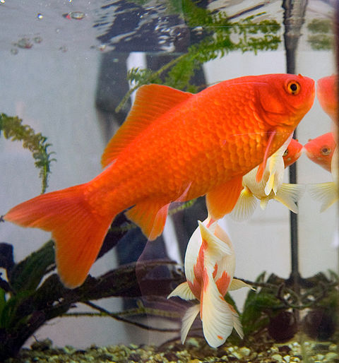

Le Poisson rouge ou Carassin doré (Carassius auratus) est une espèce de poissons d'eau douce appartenant à la famille des Cyprinidés. Sélectionné dans les élevages, on retrouve ce poisson d'eau froide dans les bassins du monde entier mais également dans les aquariums et réserves d'eaux pluviales dans lesquelles il permet d'éviter la présence de moustiques. Il est considéré de nos jours comme un animal domestique. Les formes ornementales telles que nous les connaissons au xxie siècle sont issues de la forme sauvage de l'espèce, un Carassin de couleur gris doré, proche du Carassin commun, vivant dans les eaux douces, calmes et tempérées d'Europe et de Chine. L'élevage sélectif pratiqué depuis les premières dynasties chinoises a permis d'obtenir des variétés dont la morphologie n'a plus beaucoup de points communs avec le carassin doré sauvage, variétés qui font l'objet de concours.
Le poisson rouge vit en petits groupes et réside naturellement à mi-profondeur et à proximité du fond où il cherche sa nourriture dans le substrat. Il fréquente les milieux aquatiques eutrophes (milieu riche en élément nutritif comme les algues), des eaux faibles en oxygénation
En parcourant les millénaires, nous avons découvert que le poisson rouge, bien plus qu'un simple animal de compagnie, est un véritable symbole chargé d'histoire et de significations. De la Chine antique où il était associé à la prospérité, jusqu'à nos jours où il continue de fasciner petits et grands, le poisson rouge a traversé les siècles, témoignant de la fascination de l'homme pour la nature et la beauté